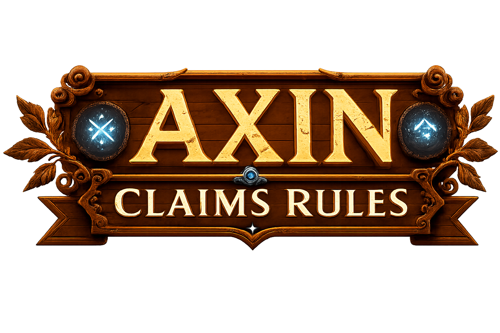
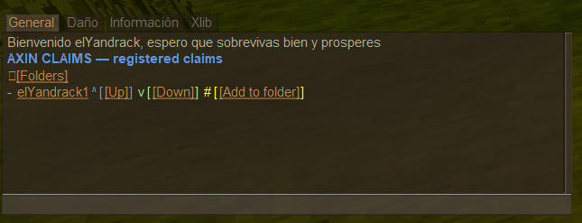
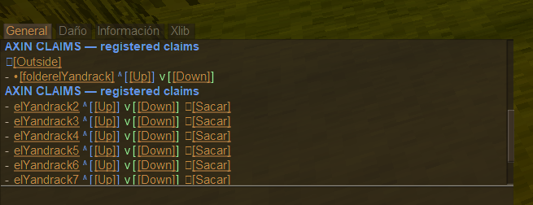
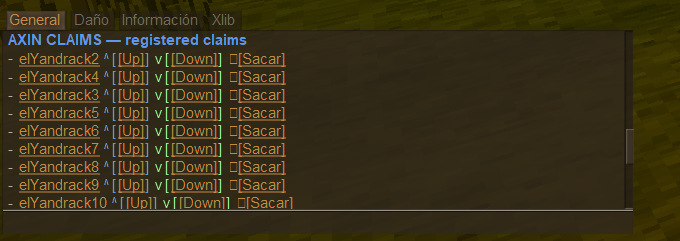
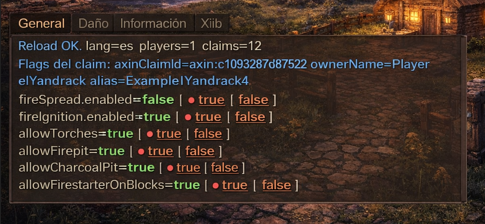

AxinClaimsRules
Reglas por claim para Vintage Story, con aliases, carpetas, orden, flags y TP por zona.

La exportación fuente marca v0.6.5 y compatibilidad objetivo Vintage Story 1.21.6. Algunas notas técnicas mencionan comportamiento observado en v0.6.6.4.
Qué hace este mod
- Registra claims del mundo en
ClaimsRegistry.jsoncon merge no destructivo. - Permite aliases, carpetas y orden manual para organizar zonas, incluyendo UI clicable en chat.
- Expone flags por claim:
fireSpread.enabled,fireIgnition.enabled,allowTorches,allowFirepit,allowCharcoalPityallowFirestarterOnBlocks. - Implementa bloqueo real de propagación de fuego cuando
fireSpread.enabled=false. - Permite guardar un TP por claim y teletransportarse por alias.
- Incluye purge opcional de claims fantasma
custommessage-y gestión configurable de claims de traders.
En v0.6.6.4 se detectó patch de gameplay para FireSpread. Los flags de FireIgnition existen, se guardan y aparecen en UI, pero la documentación fuente indica que no se encontró un patch de gameplay que los aplique; pueden depender de módulos, addons o versiones futuras.
Quick Start
- Instala el mod en servidor recomendado.
- Entra al juego y, dentro de un claim, ejecuta
/ac id. - Exporta todos los claims del mundo con
/ac claims export. - Lista y organiza con
/ac list. - Revisa o cambia flags con
/ac flags.
Archivos que crea
Ruta base: VintagestoryData/ModConfig/AxinClaimsRules/
Config.json: idioma, permisos por comando y opciones de limpieza.GlobalConfig.json: defaults globales.ClaimsRegistry.json: aliases, carpetas, reglas por claim y TP.Alias.json: alias de/acy subcomandos.ClaimsOverrides.json: legacy, deltas porclaimId.
Installation Guide
Objetivo: que el servidor cargue el mod y los jugadores puedan usar /ac.
Requisitos
- Vintage Story 1.21.6, según
modinfo.json. - AxinClaimsRules v0.6.6.4, según la guía fuente.
Servidor dedicado / host
- Descarga el
.zipdel mod desde VS ModDB o desde tu release. - Copia el ZIP a la carpeta de mods del servidor:
VintagestoryData/Mods/en Windows o~/.config/VintagestoryData/Mods/en Linux. - Reinicia el servidor.
- Verifica en
server-main.txtoserver-debug.logque aparece[AxinClaimsRules] Loadedy/axinclaim REGISTERED (alias /ac).
Singleplayer
- Copia el ZIP a
VintagestoryData/Mods/. - Inicia el mundo.
- Prueba
/ac.
Primera ejecución
El mod crea defaults en VintagestoryData/ModConfig/AxinClaimsRules/: Config.json, GlobalConfig.json, ClaimsRegistry.json y Alias.json.
Edita esos archivos con un editor de texto para PC. Un JSON inválido puede romper la carga.
Actualizar o desinstalar
Para actualizar: detén el servidor, reemplaza el ZIP, arranca y ejecuta /ac reload o /ac refresh. Para desinstalar, elimina el ZIP; conserva la carpeta de ModConfig si quieres mantener registry, aliases, TP y flags.
Commands
Root command: /ac, configurable en Alias.json. Puedes ejecutar /ac sin argumentos para ver ayuda.
Tabla rápida
| Comando | Uso | Para qué sirve |
|---|---|---|
/ac id | Dentro de un claim | Registra el claim actual, asegura alias y TP por defecto. |
/ac list | [/ac list] [folder|page] [page] | Lista claims registrados, Outside y carpetas. |
/ac flags | [/ac flags] [page] | Muestra flags efectivos del claim actual con UI clicable. |
/ac flag | (alias) (flag) (true|false) | Cambia un flag en un claim. |
/ac claims export | Exporta claims del mundo | Merge no destructivo hacia ClaimsRegistry.json. |
/ac settp | Dentro de un claim | Guarda TP del claim. |
/ac tp <alias> | Alias o carpeta/alias | Teleporta al TP guardado. |
/ac reload / /ac refresh | Admin | Recarga config, registry y lang desde disco. |
Ejemplos
/ac id
/ac claims export
/ac list
/ac list Folders 1
/ac flags
/ac flag ExampleYandrack4 fireSpread.enabled falseFlags soportados por comando
fireSpread.enabledfireIgnition.enabledallowTorchesallowFirepitallowCharcoalPitallowFirestarterOnBlocks
Flags
Reglas por claim editables desde chat, comando o JSON avanzado.
Editar desde el chat
Ejecuta /ac flags dentro de un claim. El mod mostrará cada flag con su valor y dos opciones clicables: true y false.

Requisitos
- Estar dentro de un claim.
- Tener permisos.
- Si editaste JSON a mano, usar
/ac reload.
Editar por comando
/ac flag <aliasZona> <flag> true
/ac flag <aliasZona> <flag> false
/ac flag ExampleYandrack4 fireSpread.enabled false
/ac flag ExampleYandrack4 allowTorches falseEditar desde ClaimsRegistry.json
Ruta: VintagestoryData/ModConfig/AxinClaimsRules/ClaimsRegistry.json. Edita el bloque claimRules, guarda JSON válido y ejecuta /ac reload.
Lista de flags CORE
| Flag | Tipo | Qué hace |
|---|---|---|
fireSpread.enabled | bool | Permite o bloquea propagación del fuego dentro del claim. |
fireIgnition.enabled | bool | Control de ignición según módulos/addons instalados. |
allowTorches | bool | Sub-flag de ignición. |
allowFirepit | bool | Sub-flag de ignición. |
allowCharcoalPit | bool | Sub-flag de ignición. |
allowFirestarterOnBlocks | bool | Sub-flag de ignición. |
Cómo se aplican
- fireSpread.enabled: cuando está en
false, el mod bloquea la propagación de fuego dentro del claim. - fireIgnition / sub-flags: se gestionan en UI/registry y pueden ser aplicadas por módulos/addons según tu setup.
Folders & Ordering
Organiza claims en carpetas y controla el orden del listado con UI clicable, comandos o JSON.
UI clicable desde el chat
Ejecuta /ac list. El chat muestra secciones [Folders], [Outside] y filas con botones ^[Up], v[Down], Add to folder y Sacar.
Añadir un claim a una carpeta
- Ejecuta
/ac list. - En la fila del claim, haz click en Add to folder.
- Elige la carpeta.
- El claim pasará a verse como
Carpeta/Alias.

/ac folder add <NombreCarpeta>Sacar un claim de una carpeta
Cuando un claim está dentro de una carpeta, el listado muestra Sacar. Al pulsarlo, el claim vuelve a Outside.

Subir y bajar posición
^[Up] sube una posición y v[Down] baja una posición. Afecta a outsideOrder y folderOrders[NombreCarpeta].

Comandos manuales
/ac folder add <folderName>
/ac folder up <folderName>
/ac folder down <folderName>
/ac folder assign <folderName> <alias>
/ac claim extract <folder/alias>
/ac claim up <aliasOrFolder/alias>
/ac claim down <aliasOrFolder/alias>Persistencia
Todo se guarda en ClaimsRegistry.json: foldersOrder, outsideOrder y folderOrders. Tras editar a mano, usa /ac reload.
Teleport
Cada claim puede tener un TP guardado en el registry.
Guardar TP del claim actual
/ac settpTeleport por alias
/ac tp <alias>
/ac tp home1
/ac tp Spawns/home1La primera vez que uses /ac id dentro de un claim, el mod intenta asegurar un TP por defecto si no existe.
Configuration
Mapa de archivos en VintagestoryData/ModConfig/AxinClaimsRules/.
- Default Configuration:
Config.json, idioma, permisos y toggles de limpieza. - Global Defaults:
GlobalConfig.json, defaults globales. - Alias Configuration:
Alias.json, root/acy alias de subcomandos. - Registry Format:
ClaimsRegistry.json, schema v2. ClaimsOverrides.json: legacy, deltas porclaimId.
La documentación fuente indica que el mod intenta ser no destructivo y no debería pisar cambios manuales del admin al recargar.
Default Configuration
Config.json controla idioma, permisos, allowlists y opciones de limpieza.
Campos principales
language: idioma del mod.commandPrivileges: privilegio requerido por subcomando.commandPrivilegeAllowPlayers: allowlist para comandoscontrolserver.exportTraderClaims: incluye claims de traders en export.purgeGhostCustomMessageClaims: purga claims fantasma.uiColorMoveButtonsyuiColorFolderButtons: colores de UI de chat.
Ejemplo mínimo
{
"schemaVersion": 5,
"language": "en",
"exportTraderClaims": false,
"purgeGhostCustomMessageClaims": true,
"uiColorMoveButtons": "#66aaff",
"uiColorFolderButtons": "#b07a3a",
"debugFlagCommands": false,
"debugRegistryNoOpHarness": false,
"debugFireSpreadLog": false,
"claimFlightLeaveDelaySeconds": 5,
"commandPrivileges": {
"id": "chat",
"list": "chat",
"folder": "chat",
"claim": "chat",
"flags": "chat",
"flag": "controlserver",
"claims": "controlserver",
"tp": "controlserver",
"settp": "controlserver",
"reload": "controlserver"
},
"commandPrivilegeAllowPlayers": {
"reload": "",
"flag": "",
"claims": "",
"tp": ""
}
}Allowlist
Admins con controlserver siempre pueden usar comandos elevados. Jugadores normales solo pueden si están en allowlist por UID, nombre o separadores / , ; | y espacios.
{
"commandPrivilegeAllowPlayers": {
"tp": "elYandrack/1234-abcd-uid",
"flagfireSpread.enabled": "Moderador1/Moderador2"
}
}Global Defaults
GlobalConfig.json define defaults globales si un claim no tiene reglas en ClaimsRegistry.json.
Defaults relevantes v0.6.6.4
defaults.fireSpread.enabled, por defectofalse.defaults.fireIgnition.*, por defectotrueen enabled y sub-opciones.
{
"version": "0.3.0",
"defaults": {
"fireSpread": {
"enabled": false
},
"fireIgnition": {
"enabled": true,
"allowTorches": true,
"allowFirepit": true,
"allowCharcoalPit": true,
"allowFirestarterOnBlocks": true
}
}
}Aunque fireIgnition existe como regla y flag, en v0.6.6.4 no se detectó un patch de gameplay que lo aplique.
Alias Configuration
Alias.json controla el alias raíz y subcomandos.
Qué puedes cambiar
rootAlias: alias principal del comando, por defectoac.subAliases: alias de subcomandos; por ejemplo,reloadusarefresh.
{
"schemaVersion": 2,
"rootAlias": "ac",
"subAliases": {
"id": "id",
"list": "list",
"claims": "claims",
"tp": "tp",
"settp": "settp",
"flags": "flags",
"flag": "flag",
"folder": "folder",
"reload": "refresh"
},
"extraRootAliases": {}
}Compatibilidad
Además de rootAlias, el mod mantiene alias de compatibilidad: /axinclaim y /axinclaims.
Permissions
Permisos por comando usando Config.json.
Privilegios típicos
chat: jugadores normales.controlserver: admins/operadores.
Regla de evaluación
- Si el comando no requiere
controlserver, se chequea el privilegio normal. - Si requiere
controlserver, el jugador debe tenerlo o estar en allowlist.
Allowlist por comando y por flag
{
"commandPrivileges": {
"tp": "controlserver",
"flag": "controlserver"
},
"commandPrivilegeAllowPlayers": {
"tp": "Moderador1/Moderador2",
"flagfireSpread.enabled": "Moderador1"
}
}Registry Format
ClaimsRegistry.json, schema documentado en código: v2.

Estructura de alto nivel
aliases:aliasKey -> axinClaimId.foldersOrder: lista de carpetas.outsideOrder: orden de alias fuera de carpetas.folderOrders:folderName -> [aliasKey...].players:playerUid -> { lastKnownName, claims }.
ClaimEntry
info: dueño y áreas observadas, como cuboids, bounds o center.claimRules: flags por claim, editable.tp: TP por claim, editable.
Recomendaciones
- Haz backup antes de editar.
- Mantén JSON válido.
- Refresca desde disco con
/ac reloado/ac refresh.
Addons & Extensions
El core detecta extensiones si otro mod implementa IRuleExtension.
ClaimFlight opcional
En el modelo de reglas existe claimRules.claimFlight, pero solo se crea si está cargada la extensión/mod axinclaimsrulesflight.
Si la extensión no está cargada, claimFlight será null y no tendrá efecto.
Cómo saber si hay addons cargados
Revisa server-main.txt o server-debug.log buscando [AxinClaimsRules] Loading extension: ... o [AxinClaimsRules] No rule extensions detected.
Troubleshooting
/ac no existe
- Verifica que el ZIP está en
VintagestoryData/Mods/. - Revisa logs: debe aparecer
/axinclaim REGISTERED (alias /ac).
“Players only”
Los comandos están pensados para ser ejecutados por un jugador.
“No tienes privilegios...”
Edita Config.json: commandPrivileges para subir/bajar permisos y commandPrivilegeAllowPlayers para allowlistear jugadores.
No se crean archivos en ModConfig
- El servidor necesita permisos de escritura en
VintagestoryData/ModConfig/. - Si el JSON está corrupto, el mod puede fallar al cargarlo. Revisa formato.
Fire spread sigue propagándose dentro de un claim
- Entra al claim y ejecuta
/ac flags. - Asegúrate de que
fireSpread.enabled=false. - Recarga con
/ac reload.
Para logs, activa debugFireSpreadLog=true en Config.json. La guía avisa que está rate-limited, pero puede generar logs.
Changelog
v0.6.5
- Purge de claims fantasma
custommessage-, con skip export y purge en reload/export. Config.jsonenModConfig/AxinClaimsRules/.- UI, flags y registry modularizados según IA-ARCH.
La exportación fuente indica que para generar un changelog automático haría falta el repo o historial como canon.
AxinClaimsRules · Wiki integrada AXIN. Si encuentras un bug, adjunta server-debug.log, Config.json y el fragmento relevante de ClaimsRegistry.json.